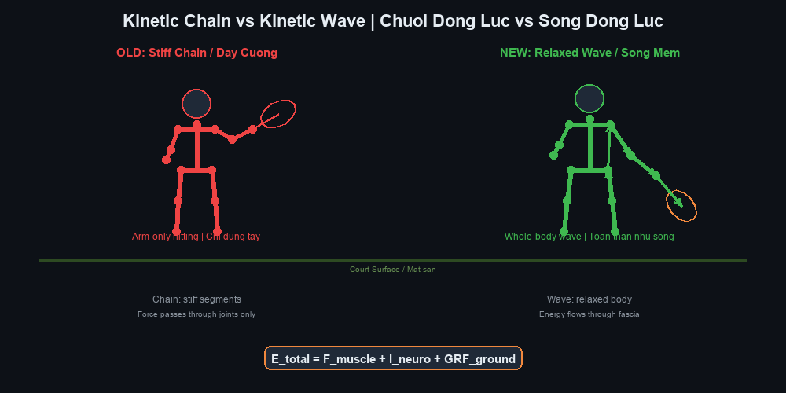
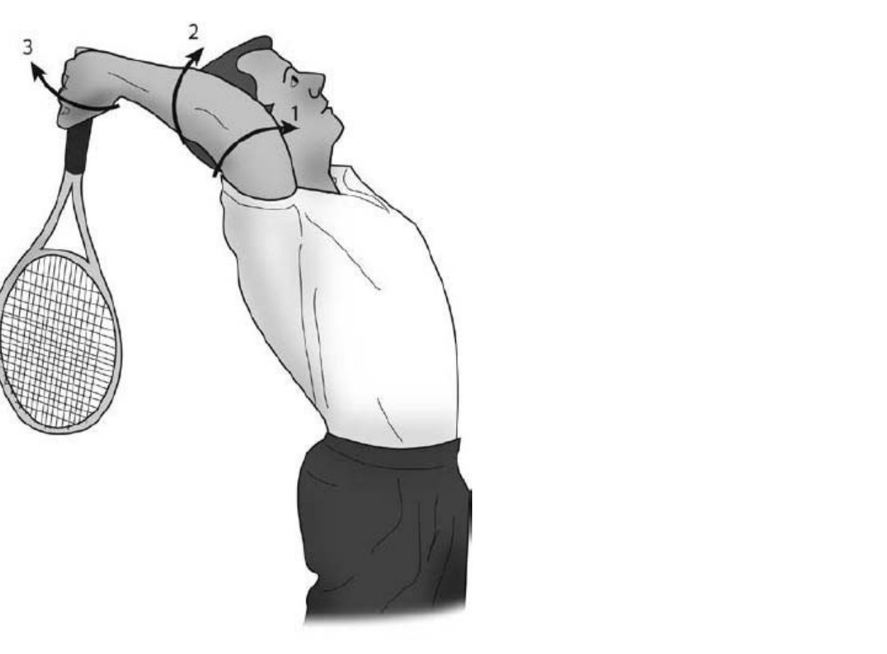
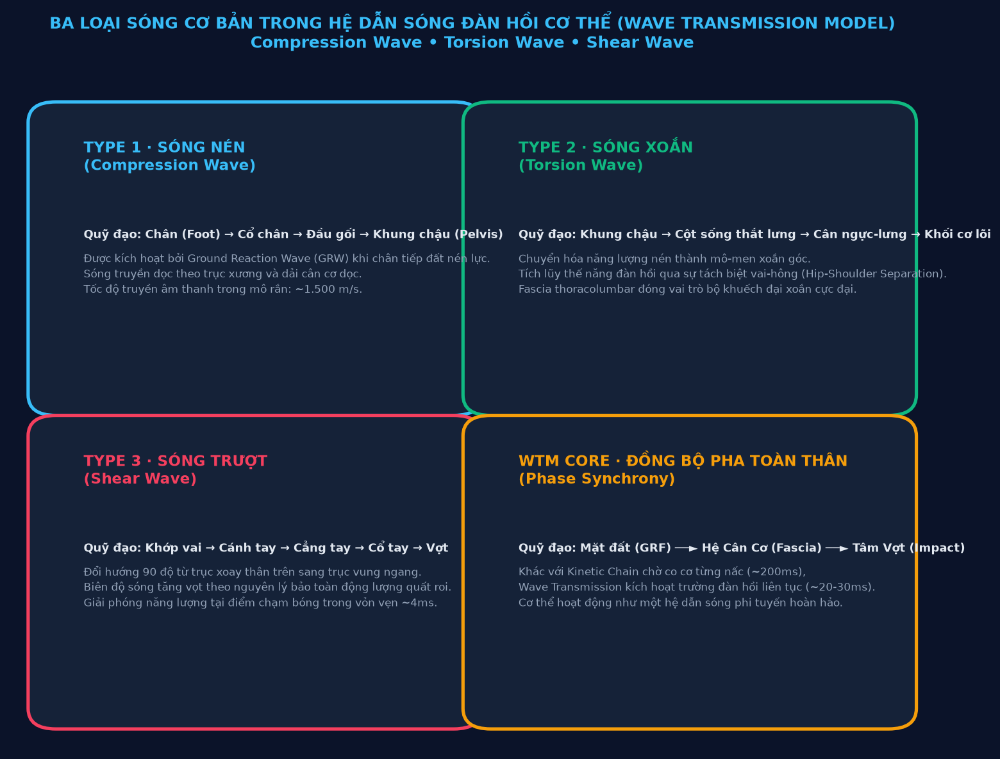
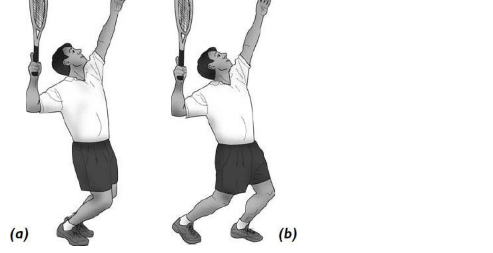
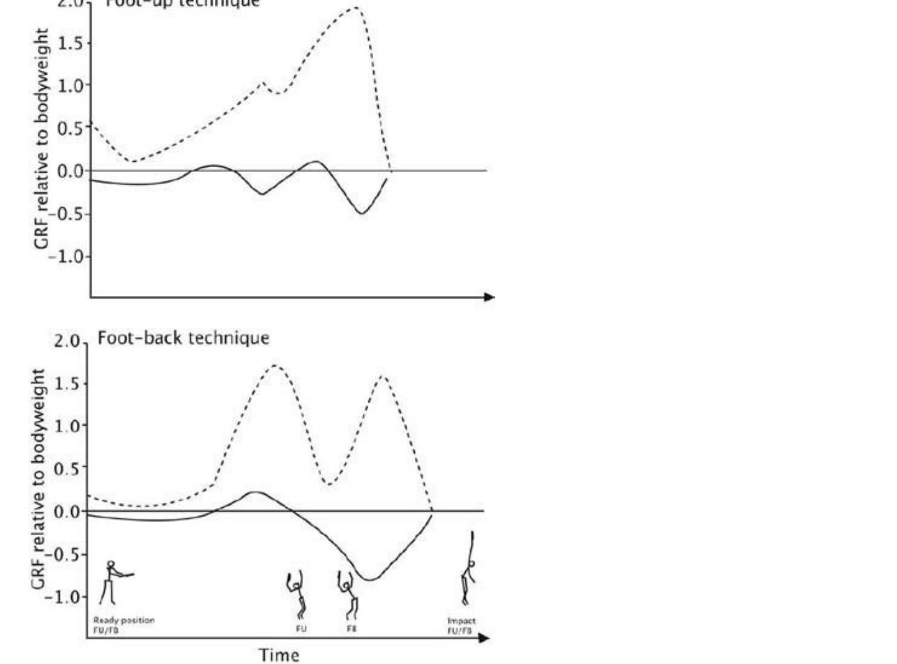
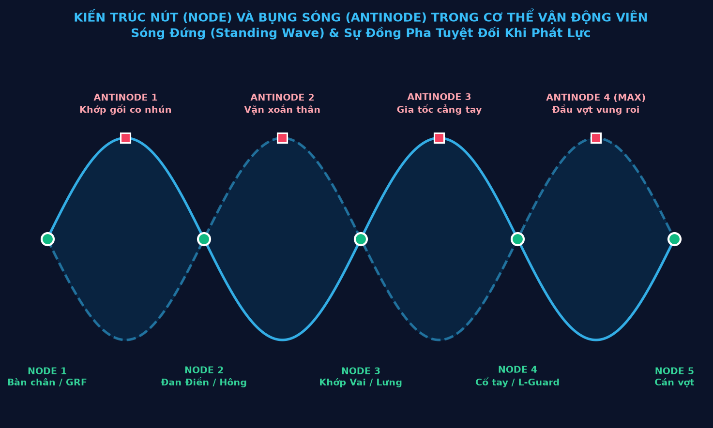
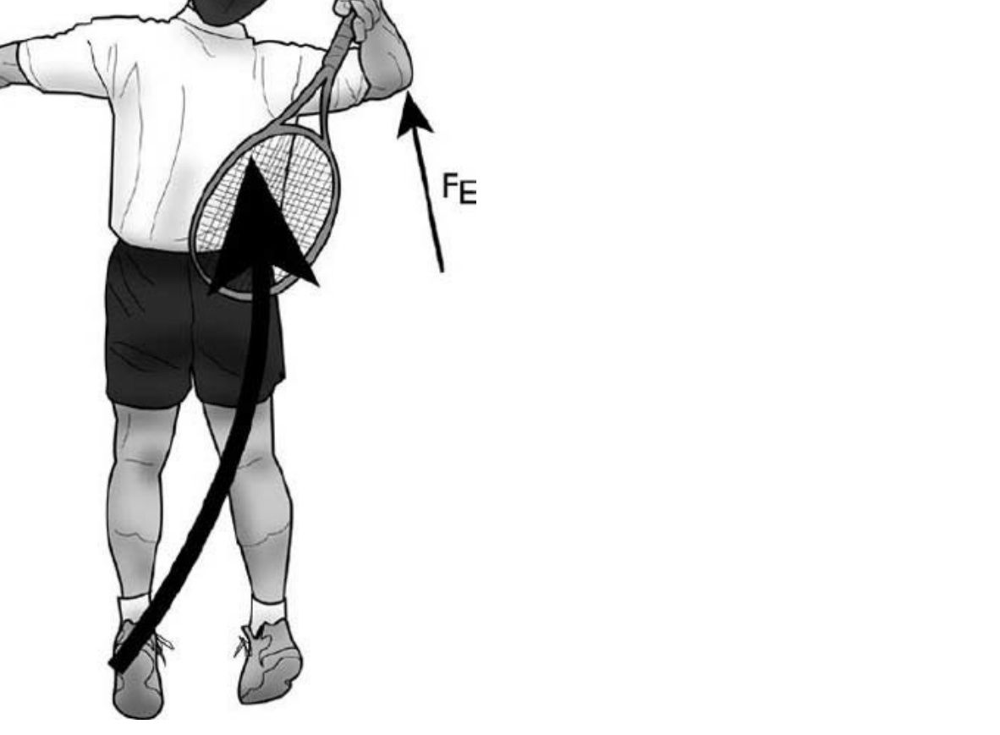
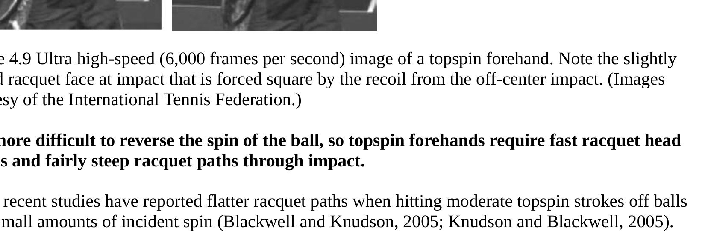

Cuộc Cách Mạng Tư DuyThinking Revolution
Trong hơn một thế kỷ, thể thao học đường đã dạy chúng ta nhìn cơ thể như một cỗ máy: xương là đòn bẩy, cơ bắp là động cơ, khớp là bản lề. Mô hình ấy đơn giản, dễ hình dung, và nó giải thích được tại sao ta gãy xương khi té. Nhưng nó không giải thích được một chuyện nhỏ hơn nhiều: vì sao Roger Federer có thể tung cú thuận tay 145 km/h với cánh tay gần như thư giãn hoàn toàn. Máy móc không làm thế. Và cơ thể con người cũng không phải máy móc.
For more than a century, school sports have taught us to see the body as a machine: bones as levers, muscles as motors, joints as hinges. That model is simple, easy to visualize, and it explains why we break bones when we fall. But it doesn't explain something much smaller: why Roger Federer can hit a forehand 145 km/h with his arms almost completely relaxed. Machines don't do that. And the human body is not a machine either.
Thực ra, cơ thể là một hệ thống tensegrity (cấu trúc căng-tích hợp) — từ ghép của "tension" (sức căng) và "integrity" (sự toàn vẹn). Kiến trúc sư Buckminster Fuller đặt ra khái niệm này năm 1955, và bác sĩ sinh lý Stephen Levin mang nó vào sinh học năm 1981 dưới tên biotensegrity (sinh-căng-tích hợp). Trong một cấu trúc tensegrity, những thành phần chịu nén — tức xương — không bao giờ chạm nhau trực tiếp. Chúng lơ lửng bên trong một mạng lưới chịu căng liên tục, gồm mạc cơ, gân và dây chằng. Lực không đi qua một điểm duy nhất; nó phân tán đều khắp hệ thống. Hễ một phần bị tác động, toàn bộ hệ thống phản ứng cùng lúc. Hãy nghĩ đến một màng nhện: chạm một sợi, cả mạng rung theo.
In fact, the body is a system of Tensegrity (tension-integrity structure) — a portmanteau of "tension" and "integrity" (integrity). Architect Buckminster Fuller coined the concept in 1955, and physiologist Stephen Levin introduced it to biology in 1981 under the name biotensegrity. In a tensegrity structure, the compression members — the bones — never touch each other directly. They are suspended within a network under constant tension, composed of fascia muscles, tendons and ligaments. The force does not pass through a single point; it is evenly distributed throughout the system. Whenever one part is affected, the entire system reacts at the same time. Think of a spider web: touch one strand, and the whole web vibrates.
Chính từ trực giác này, Viện Nghiên Cứu Quần Vợt Tương Lai đề xuất một khung lý thuyết đột phá gọi là Mô hình Truyền sóng (Wave Transmission Model — WTM). Theo mô hình ấy, cơ thể không phải một cỗ máy cơ khí gồm những mắt xích khô cứng, mà là một trường dẫn sóng đàn hồi phi tuyến liên tục (continuous non-linear elastic waveguide). Toàn bộ khối cơ, gân, xương và đặc biệt là mạng lưới mạc tạo thành một môi trường truyền dao động cơ học tinh vi, nơi năng lượng không được chuyền từng nấc mà được tích lũy, điều chế và đồng bộ hóa qua toàn bộ hệ cân mạc. Mô hình chuỗi động học (kinetic chain) truyền thống vẫn hữu dụng ở mức độ thô, nhưng khi áp vào những cú vung vợt vượt 160 km/h của Carlos Alcaraz hay Jannik Sinner, nó bộc lộ ba nghịch lý không thể bỏ qua. Thứ nhất, thời gian dẫn truyền thần kinh: mỗi nhóm cơ riêng lẻ cần 30–50 miligiây để co hoàn toàn, nên nếu lực phải đi qua 5–6 mắt xích tuần tự, tổng thời gian sẽ là 150–250 miligiây, trong khi toàn bộ cú đánh chỉ diễn ra trong 80–120 miligiây. Thứ hai, tổn thất năng lượng tại khớp: mỗi khớp là một điểm tiêu hao do ma sát, nên truyền lực qua hàng chục khớp xương sẽ làm mất hơn 60% năng lượng gốc từ mặt đất. Thứ ba, chấn thương quá tải khớp: ai cố gồng cứng từng khớp để tạo lực sẽ dồn toàn bộ ứng suất cắt lên sụn vai và dây chằng khuỷu, dẫn đến rách chóp xoay và thoái hóa sớm. Mô hình sóng giải quyết cả ba nghịch lý ấy bằng một cơ chế duy nhất — truyền dao động thay vì chuyền lực.
It is from this intuition that the Future of Tennis Research Institute proposes a groundbreaking theoretical framework called the Wave Transmission Model (WTM). According to that model, the body is not a mechanical machine consisting of dry and rigid links, but a continuous non-linear elastic waveguide field. The entire mass of muscles, tendons, bones and especially the fascia network form a sophisticated mechanical vibration transmission medium, where energy is not transferred step by step but is accumulated, modulated and synchronized throughout the entire fascia fascia system. The traditional kinetic chain model is still useful on a rough level, but when applied to the 160 km/h swings of Carlos Alcaraz or Jannik Sinner, it reveals three paradoxes that cannot be ignored. First, the spirit conduction time: each individual muscle group takes 30–50 milliseconds to fully contract, so if the force has to pass through 5–6 sequential links, the total time will be 150–250 milliseconds, while the entire stroke takes only 80–120 milliseconds. Second, energy loss at joints: each joint is a point of consumption due to friction, so transmitting force through dozens of joints will lose more than 60% of the original energy from the ground. Third, joint overload injuries: anyone who tries to stiffen each joint to create force will put all the shear stress on the shoulder cartilage and elbow ligaments, leading to rotator cuff tears and premature degeneration. The wave model solves all three paradoxes with a single mechanism — transmitting vibrations instead of transmitting forces.

Và đây là chìa khóa của cuốn sách này: mạc (fascia) chính là siêu dẫn truyền sóng của cơ thể. Cho đến tận thập niên 2000, sách giải phẫu vẫn coi mạc như lớp bao bì vô dụng. Giờ đây, nhờ công trình của Robert Schleip và Helene Langevin, chúng ta biết mạc là cơ quan cảm giác lớn nhất cơ thể và là một mạng lưới truyền lực liên tục, đàn hồi phi tuyến dưới dạng ma trận tinh thể lỏng collagen (liquid crystal collagen matrix). Về vi mô, nó gồm sợi collagen siêu bền chịu kéo tới 120 MPa, sợi elastin đàn hồi, axit hyaluronic (chất bôi trơn giữ tới 6 lít nước trong một gram), và những tế bào cơ sợi co rút chủ động mà không cần tín hiệu thần kinh. Đặc tính đàn hồi của mạc không tuân theo định luật Hooke thông thường mà mang tính phi tuyến: ở tốc độ chậm nó mềm mại, trượt nhẹ và hấp thụ biến dạng không kháng cự; ở xung lực giật nhanh nó lập tức khóa cứng thành một siêu lò xo, truyền năng lượng nguyên vẹn mà không làm biến dạng khớp; và khác với cơ bắp phải tiêu thụ phân tử ATP để co duỗi, mạc tích trữ rồi giải phóng động năng hoàn toàn thụ động theo chu kỳ đàn hồi tự nhiên. Khi axit hyaluronic ở độ nhớt lý tưởng, các lớp mạc trượt êm; khi nó kết tụ vì căng thẳng, lạnh hay ít vận động, sóng truyền đi sẽ mang theo nhiễu.
And here is the key to this book: fascia (fascia) is the body's super conductor of wave transmission. Until the 2000s, anatomy textbooks still treated fascia as useless packaging. Now, thanks to the work of Robert Schleip and Helene Langevin, we know fascia is the body's largest sensory organ and is a continuous, nonlinear elastic force transmission network in the form of a liquid crystal collagen matrix. Microscopically, it consists of super-strong collagen fibers that can withstand tensile loads of up to 120 MPa, elastic elastin fibers, hyaluronic acid (a lubricant that holds up to 6 liters of water per gram), and fibromuscular cells that contract actively without nerve spirit signals. The elastic properties of fascia do not obey the usual Hooke's law but are nonlinear: at slow speeds it is soft, slides gently and absorbs deformation without resistance; At fast recoil impulses it instantly locks into a super spring, transmitting energy intact without deforming the joint; and unlike muscles that must consume ATP molecules to stretch, fascia stores and releases kinetic energy completely passively according to the natural elastic cycle. When hyaluronic acid is at its ideal viscosity, the fascia layers slide smoothly; When it aggregates due to stress, cold or lack of exercise, the traveling waves will carry noise.
Mạc còn là một thứ bộ nhớ cơ học. Nó không chỉ truyền lực mà còn lưu trữ thông tin vật lý. Tập một kỹ thuật đúng đủ lâu, mạc tự cấu trúc lại theo hướng tối ưu cho kỹ thuật ấy — đó là lý do vận động viên đỉnh cao có "bộ nhớ cơ thể" sâu hơn người phong trào, và cũng là lý do sau chấn thương, mạc cần từ sáu tháng đến hai năm để phục hồi trọn vẹn. Tập sai liên tục sẽ "lập trình" nó theo chiều hướng xấu.
Fascia is also a type of mechanical memory. It not only transmits force but also stores physical information. Practicing a correct technique long enough, fascia restructures itself in a direction that is optimal for that technique — which is why top athletes have a deeper "body memory" than amateurs, and also why after injury, fascia takes six months to two years to fully recover. Continuous wrong practice will "program" it in a bad direction.
Trạng thái Tùng — bài học từ Thái Cực QuyềnTung State — lessons from Tai Chi
Trong Thái Cực Quyền, chữ Tùng (松) là nguyên lý cao nhất. Nó không có nghĩa là lỏng lẻo hay yếu ớt. Tùng là một trạng thái thư giãn có chủ đích: không co rút cơ vô ích, nhưng cơ thể vẫn được bành trướng nhẹ về mọi hướng như quả bóng căng, duy trì một áp suất nội tại đủ để sóng lan truyền mà không sinh nhiễu, và sẵn sàng phản ứng tức thì. Phép thử đơn giản: đứng thẳng, thả vai, hít sâu và cảm nhận khoảng không giữa các đốt sống mở ra — đó là lúc mạng tensegrity vận hành tốt nhất.
In Tai Chi, the word Tung (sōng) is the highest principle. It does not mean loose or weak. Tung is a state of intentional relaxation: there is no useless muscle contraction, but the body is still slightly expanded in all directions like a tight balloon, maintaining an internal pressure sufficient for the waves to propagate without causing interference, and ready to react immediately. A simple test: stand up straight, drop your shoulders, breathe deeply and feel the space between your vertebrae open up — that's when the tensegrity network works best.
Trở ngại lớn nhất ngăn cản sự lan truyền sóng đàn hồi chính là hiện tượng co cứng đối kháng (co-contraction): khi lo âu, sợ đánh hỏng hay cố tình dùng sức tay, não bộ đồng thời kích hoạt cả cơ chủ vận lẫn cơ đối vận, hai nhóm tự ghìm chân nhau, tạo nên sự căng cứng nội tại, khóa chặt các khớp và chặn đứng đường đi của sóng cơ học. Năng lượng sinh ra từ mặt đất bị hấp thụ rồi tiêu tán thành nhiệt ngay trong cơ thể, khiến tay vợt nhanh mỏi và gia tăng tối đa nguy cơ viêm gân khuỷu tay tennis. Để sóng truyền thông suốt, cơ thể phải đạt tới trạng thái Phóng Tùng (Sung) — một sự thả lỏng linh hoạt, khớp mở rộng, dây chằng căng nhẹ như dây đàn, nhưng không hề rũ rượi hay yếu ớt. Chỉ khi ấy cơ thể mới biến thành một hệ dẫn sóng hoàn hảo, cho phép năng lượng cơ học luân chuyển với hiệu suất gần như tuyệt đối. Tại sao Tùng lại tạo ra tốc độ? Khi cơ gồng cứng, sợi mạc bị nén, axit hyaluronic bị vắt ra, sóng dội ngược tại những điểm cứng và năng lượng hao phí vào việc chống lại chính sức co của mình. Ở trạng thái Tùng, mạc giãn ra, axit hyaluronic hoạt hóa, sóng lan truyền tự do và năng lượng được chuyển trọn vào quả bóng. Căng là mất lực; buông là có lực.
The biggest obstacle preventing the propagation of elastic waves is the phenomenon of antagonistic contraction: when anxious, afraid of damaging or intentionally using hand force, the brain simultaneously activates both agonist and antagonist muscles, the two groups restrain each other, creating internal tension, locking the joints and blocking the path of mechanical waves. The energy generated from the ground is absorbed and then dissipated into heat right in the body, causing tennis players to tire quickly and maximize the risk of tennis elbow tendonitis. In order for the waves to transmit smoothly, the body must reach a state of Lung Tung (Sung) - a flexible relaxation, joints wide open, ligaments slightly taut like guitar strings, but not limp or weak. Only then will the body become a perfect waveguide, allowing mechanical energy to circulate with almost absolute efficiency. Why does Tung create speed? When the muscle tenses, the fascia fibers are compressed, the hyaluronic acid is squeezed out, waves bounce back at the stiff spots, and energy is wasted in resisting its own contraction. In the Tung state, fascia relaxes, hyaluronic acid activates, waves propagate freely and energy is fully transferred into the balloon. Tension is loss of strength; Letting go is powerful.
Bốn đường ray mạc và vai trò của chúngThe four fascia rails and their roles
Nhà nghiên cứu Thomas Myers đã vẽ bản đồ mười hai "đường ray" mạc trong cơ thể người (Anatomy Trains — Bản Đồ Đường Ray Cơ Thể, 2001). Trong tennis, bốn đường quan trọng nhất là: Đường Trước Nông (Superficial Front Line) chạy từ ngón chân lên ngực và đầu, giữ tư thế đứng cùng pha chuẩn bị; Đường Sau Nông (Superficial Back Line) từ lòng bàn chân qua gân Achilles lên cột sống, truyền phản lực mặt đất từ chân lên; Đường Xoắn (Spiral Line) chéo từ vai phải sang hông trái rồi xuống chân phải, tạo ra xoắn và hệ số X (X-Factor); và Đường Tay (Arm Lines) dẫn sóng từ thân qua vai, cánh tay vào tận đầu vợt.
Researcher Thomas Myers has mapped twelve "train tracks" fascia in the human body (Anatomy Trains — Body Rail Map, 2001). In tennis, the four most important lines are: Superficial Front Line, which runs from the toes to the chest and head, maintaining a standing position during the preparation phase; Superficial Back Line from the sole of the foot through the Achilles tendon to the spine, passing ground reaction force up from the leg; Spiral Line diagonally from right shoulder to left hip and down to right leg, creating twist and X-Factor; and Arm Lines guide waves from the body through the shoulders and arms to the head of the racket.
Tại sao người chơi phong trào hay chấn thươngWhy do players often get injured?
Hơn 80% chấn thương tennis — khuỷu tay tennis, đau vai, căng cơ lưng — đến từ một nguyên nhân chung: phản lực mặt đất không được chuyển hóa qua hệ tensegrity mà đổ thẳng vào xương và khớp. Chuỗi thường đi như sau: gồng cứng cánh tay khi đánh khiến mạc bị nén, sóng từ bóng dội ngược vào khớp thay vì được hấp thụ, gân khuỷu chịu tải liên tục, rồi vi rách sợi collagen dẫn đến viêm gân và khuỷu tay tennis mãn tính. Giải pháp không phải thuốc giảm đau, mà là trả cơ thể về trạng thái Tùng để mạc làm tròn việc hấp thụ tải, bảo vệ gân.
More than 80% of tennis injuries — tennis elbow, shoulder pain, back strains — come from one common cause: ground reaction force is not metabolized through the tensegrity system but goes straight to the bones and joints. The chain usually goes like this: stiffening the arm when hitting causes fascia to compress, waves from the ball bounce back into the joint instead of being absorbed, the elbow tendon is subjected to constant load, then micro-tearing of the collagen fibers leads to tendonitis and chronic tennis elbow. The solution is not painkillers, but rather returning the body to the Tung state so that fascia does its job of absorbing the load and protecting the tendons.
Thay đổi ngôn ngữ huấn luyệnChange the training language
Điều kiện quan trọng nhất với một huấn luyện viên là đổi cách dùng từ. Thay vì ra lệnh kiểu cơ khí — "gập khuỷu tay vào!", "xoay hông mạnh!" — hãy dẫn dắt theo sóng: "để cánh tay rơi tự nhiên, đừng giữ chặt", "để hông dẫn, vai theo sau như đuôi". Gồng là chặn sóng; buông là để sóng đi qua. Sự khác biệt giữa một tay vợt nghiệp dư và một bậc thầy nằm trọn ở cơ chế truyền này: xung sóng cơ học vượt qua toàn thân chỉ trong 20–30 miligiây, so với 150–200 miligiây của chuỗi cơ khí tuần tự. Toàn thân duy trì trạng thái đàn hồi lỏng lẻo nhưng gắn kết — chính là tensegrity — và năng lượng được giải phóng tự động qua cơ chế hồi phục đàn hồi của cân mạc, biến cú đánh thành một cú quất roi không trọng lượng nhưng mang sức công phá hủy diệt. Toàn bộ cuốn sách này sẽ quay lại ý tưởng ấy, chương qua chương, trên từng phần của cú đánh.
The most important condition for a coach is to change the way he uses words. Instead of giving mechanical commands — "bend your elbows!", "rotate your hips hard!" — lead with the wave: "let your arms fall naturally, don't hold tight", "let your hips lead, shoulders follow like a tail". Gong means to block the wave; Letting go means letting the wave pass. The difference between an amateur and a master lies entirely in this transmission mechanism: mechanical wave pulses pass through the whole body in just 20–30 milliseconds, compared to 150–200 milliseconds for sequential mechanical sequences. The whole body maintains a loose but cohesive elastic state — tensegrity — and energy is released automatically through the elastic recovery mechanism of the fascia fascia, turning the blow into a weightless but devastating whip. This entire book will return to that idea, chapter by chapter, on each part of the swing.

Pin Trái Đất – Phản Lực Mặt ĐấtEarth Battery – Ground Reaction Force
Mọi lực trong tennis đều bắt đầu từ đất, không phải từ tay. Khi bạn bước vào cú đánh, bàn chân đặt xuống và mặt sân đẩy ngược lại — đó là lực phản hồi mặt đất (Ground Reaction Force — GRF). Nó là viên pin nguyên tử của cú đánh: nguồn năng lượng gốc mà không một cơ bắp riêng lẻ nào trên cơ thể tạo ra được. Vận động viên giỏi không "đánh mạnh hơn"; họ chỉ biết cách giải phóng viên pin này hiệu quả hơn. Theo Mô hình Truyền sóng, khoảnh khắc bàn chân đạp xuống không đơn thuần là điểm khởi đầu của một đòn bẩy, mà là một sự kiện phát sinh sóng phản lực mặt đất (Ground Reaction Wave — GRW): năng lượng ấy lập tức bắt đầu hành trình lan truyền qua cơ thể dưới ba dạng sóng cơ bản.
All force in tennis starts from the ground, not from the hands. When you step into the shot, your foot goes down and the ground pushes back — that's Ground Reaction Force (GRF). It is the atomic battery of the shot: a source of primary energy that no single muscle in the body can produce. Good athletes don't "hit harder"; they just know how to release this battery more effectively. According to the Wave Propagation Model, the moment the foot presses down is not simply the starting point of a lever, but an event that generates a ground reaction force (Ground Reaction Wave — GRW): that energy immediately begins its journey through the body in three basic wave forms.
Sóng thứ nhất là sóng nén (compression wave). Nó phát sinh ngay khi chân tiếp đất, nén trọng lượng cơ thể xuống mặt sân cứng. Phản lực mặt đất tạo ra một sóng áp suất truyền dọc theo trục xương cẳng chân, đùi và cột sống. Vì mô xương và màng xương có mật độ phân tử cao, sóng nén lan truyền với vận tốc cực nhanh, khoảng 1.500 m/s, đóng vai trò như một tín hiệu kích hoạt toàn hệ thống trước khi bất kỳ cơ bắp nào kịp co lại. Sóng thứ hai là sóng xoắn (torsion wave). Khi sóng nén chạm tới khung chậu, góc đặt của bàn chân và sự lệch pha giữa hai trục chân chuyển hóa nó thành một mô-men xoắn quay tròn, vặn xoắn cột sống thắt lưng và kéo căng toàn bộ dải cân ngực-lưng (thoracolumbar fascia — TLF). Đây là nơi cơ thể nạp năng lượng đàn hồi khổng lồ, tựa như vặn xoắn một sợi dây cao su chịu tải cao. Sóng thứ ba là sóng trượt (shear wave). Khi sóng xoắn chạm tới khớp vai và đai ngực, nó bẻ góc 90 độ để chuyển thành sóng trượt chạy dọc theo cánh tay đến đầu vợt. Khi ấy vai không đóng vai trò phát lực mà là một "bộ đổi hướng sóng": cánh tay thả lỏng hoàn toàn hoạt động như một sợi dây thừng, biên độ dao động tăng dần theo chiều dài và đạt cực đại ngay tại tâm mặt vợt.
The first wave is a compression wave. It arises as soon as the foot hits the ground, compressing the body's weight onto the hard court surface. Ground reaction force creates a pressure wave that travels along the leg, thigh, and spine. Because bone tissue and periosteum have a high molecular density, compression waves propagate at extremely fast speeds, about 1,500 m/s, acting as a signal to activate the entire system before any muscles can contract. The second wave is a torsion wave. When the compression wave reaches the pelvis, the foot angle and the phase difference between the two leg axes convert it into a rotational torque, twisting the lumbar spine and stretching the entire thoracolumbar fascia (TLF). This is where the body absorbs enormous elastic energy, like twisting a highly loaded rubber band. The third wave is a shear wave. When the torsional wave reaches the shoulder joint and pectoral girdle, it turns 90 degrees to transform into a sliding wave that runs along the arm to the racket head. At that time, the shoulder does not play a role in generating force but is a "wave deflector": the completely relaxed arm acts like a rope, the amplitude of oscillation gradually increases with length and reaches its maximum right at the center of the racket face.

GRF không phải một luồng thẳng. Hình dạng của nó tuỳ thuộc vào cách bạn tiếp đất. Ở tư thế mở (open stance, 45–90 độ so với vạch cuối), GRF chuyển thẳng thành xoay ngang — lý tưởng cho thuận tay tốc độ cao. Ở tư thế nửa mở (30–45 độ) nó cân bằng giữa xoay và đẩy tới, linh hoạt nhất. Ở tư thế đóng (vuông góc), GRF hóa thành đẩy mạnh về phía trước — tốt cho trái tay slice. Và trong cú scissor kick, bạn không tiếp đất khi đánh, nên GRF được tạo ra từ đà trước đó, cho thời gian phản ứng dài hơn. Chọn điểm tiếp đất, tức là đặt "nút sóng" đầu tiên, quyết định hướng viên pin phóng năng lượng vào cú đánh.
GRF is not a straight stream. Its shape depends on how you land. In an open stance (open stance, 45–90 degrees from the base line), the GRF transitions straight into horizontal rotation — ideal for high-speed forehands. In the semi-open position (30–45 degrees) it balances rotation and propulsion, being most flexible. In the closed (perpendicular) position, the GRF turns into a strong forward push — good for slice backhands. And in a scissor kick, you don't hit the ground when you hit, so GRF is generated from the previous momentum, giving you a longer reaction time. Choose the landing point, i.e. place "wave node" first, deciding the direction of the energy discharge battery into the shot.
Mạc biến GRF thành sóng dọcFascia turns the GRF into a longitudinal wave
Bàn chân chạm đất chỉ là khởi đầu. Cái kỳ diệu nằm ở chỗ mạc tiếp nhận sóng nén và biến nó thành sóng dọc chạy lên cột sống. Quá trình diễn ra trong một nhịp thời gian rất hẹp: từ 0 đến 30 miligiây, bàn chân đặt xuống, cơ và mạc chuẩn bị nhận tải; từ 30 đến 80 miligiây, GRF đạt đỉnh, mạc co giãn và lưu trữ thế năng đàn hồi; từ 80 đến 130 miligiây, mạc bung ra, thế năng hóa thành sóng dọc đi lên. Nếu bạn duỗi quá sớm — trước khi bàn chân ổn định — bạn mất GRF, sóng yếu và mất kiểm soát. Nếu duỗi quá trễ — sau khi hông đã xoay — chuỗi truyền bị phá vỡ, lực "gãy" tại hông. Đó là lý do bước chân êm, không tiếng động, là bằng chứng mạc đang làm việc hoàn hảo.
Feet touching the ground is just the beginning. The magic lies in the fact that fascia receives the compression wave and turns it into a longitudinal wave running up the spine. The process takes place in a very narrow time window: from 0 to 30 ms, the foot is down, the muscle and fascia prepare to receive the load; From 30 to 80 ms, GRF peaks, fascia contracts and stores elastic potential energy; From 80 to 130 milliseconds, fascia unfolds, the potential energy turns into an upward longitudinal wave. If you stretch too early — before your foot is stable — you lose GRF, weaken the wave, and lose control. If extension is too late — after the hip has rotated — the transmission chain is broken, the force "breaks" at the hip. That's why quiet, silent footsteps are proof that fascia is working perfectly.
Triple joint extension — cái công tắcTriple joint extension — the switch
Sức mạnh thực sự đến từ sự đồng bộ của ba khớp: cổ chân, gối và hông, giãn rồi co cùng nhịp để bắn sóng dọc lên. Đây là "công tắc" mà vận động viên đỉnh cao bật lên vô thức. Nhưng sóng chỉ đi tiếp nếu đường truyền thông suốt: cổ chân hơi gập tự nhiên làm bộ giảm chấn đầu tiên; gối hơi gập khoảng 20 độ hấp thụ GRF từ dưới; cột sống trung lập, cong sinh lý, để sóng không bị gãy; hông trung lập khi đứng, gập khi đánh, là điểm chuyển hóa từ sóng dọc sang sóng ngang. Khóa gối thẳng hoàn toàn, ưỡn lưng, hay gồng cổ chân đều làm sóng "rò rỉ" hoặc "khóa", và năng lượng bay mất.
Real strength comes from the synchronization of three joints: ankle, knee and hip, expanding and contracting in rhythm to shoot vertical waves up. This is the "switch" that top athletes unconsciously turn on. But the wave only continues if the path is clear: the ankle is naturally slightly flexed as the first shock absorber; The pillow is slightly bent about 20 degrees to absorb GRF from below; neutral spine, physiological curvature, so that the waves do not break; Neutral hips when standing, flexed when hitting, is the transition point from vertical waves to horizontal waves. Locking the knees completely straight, arching the back, or flexing the ankles all cause the wave to "leak" or "lock", and the energy is lost.


Tóm lại, sự khởi đầu của mọi cú đánh là một sự kiện sóng, không phải một cú đẩy cơ bắp. Lực phản hồi mặt đất sinh ra sóng nén, sóng nén hóa sóng xoắn tại khung chậu, sóng xoắn hóa sóng trượt tại vai, và sóng trượt bùng nổ ở đầu vợt. Mạc là bộ biến đổi, triple joint extension là công tắc, và sự im lặng của bước chân là thước đo hiệu quả. Footwork không phải chạy nhanh, mà là đặt đúng nút sóng để định hướng sóng vào cú đánh.
In short, the start of every stroke is a wave event, not a muscular push. The ground reaction force creates a compression wave, the compression wave turns into a twisting wave at the pelvis, the twisting wave turns into a sliding wave at the shoulders, and the sliding wave explodes at the racket head. Fascia is the converter, the triple joint extension is the switch, and the silence of the footsteps is the measure of effectiveness. Footwork is not about running fast, but about placing wave node correctly to direct the wave into the shot.
Nút Sóng – Trạm Biến Áp Sinh HọcWave Node – Biological Transformer Station
Trong mô hình máy móc, khớp là bản lề — một điểm chuyển hướng cứng. Trong mô hình sóng, khớp là nút sóng (wave node): một trạm biến áp sinh học nơi xung lượng được tiếp nhận, đổi hướng và truyền tiếp mà không rò rỉ. Đặt một khớp đúng vị trí, và phản lực từ quả bóng tự triệt tiêu; đặt sai, và sóng dội ngược vào chính bạn dưới dạng chấn thương. Khi sóng tới (incident wave) chạy lên từ mặt đất gặp sóng phản xạ (reflected wave) dội từ đầu vợt, chúng giao thoa và tạo thành một hệ sóng đứng (standing wave system). Trong hệ ấy, nút sóng là những vị trí có biên độ dao động bằng không nhưng chịu áp suất cơ học và mật độ thế năng cực đại. Ở một cú đánh chuẩn, các điểm nút tự nhiên nằm tại bàn chân tiếp xúc mặt đất, tại trục quay trung tâm của khung chậu (Đan Điền), tại khớp ổ chảo vai và tại điểm cán vợt trong lòng bàn tay. Giữ vững những điểm nút này — không để trục cơ thể nghiêng ngả — chính là nghệ thuật của một vận động viên thượng thừa.
In the machine model, the joint is a hinge — a rigid point of change of direction. In the wave model, the joint is wave node (wave node): a biological transformer station where momentum is received, redirected, and transmitted without leakage. Place a joint in the right position, and the reaction force from the ball cancels itself out; Place it wrong, and the wave bounces back at you in the form of injury. When the incident wave running up from the ground meets the reflected wave bouncing from the racket head, they interfere and form a standing wave system. In that system, wave node are locations with zero vibration amplitude but subject to maximum mechanical pressure and potential energy density. In a standard swing, the natural nodes are at the foot contacting the ground, at the central axis of rotation of the pelvis (Dan Dien), at the shoulder glenoid joint and at the point of the racket handle in the palm of the hand. Maintaining these key points — not allowing the body's axis to tilt — is the art of an elite athlete.
Vị trí nút sóng ở từng khớpPosition wave node at each joint
Mỗi khớp có một "vị trí vàng" để sóng đi qua tự do. Cổ tay hơi gấp tự nhiên khoảng 15 độ, không gồng, để sóng từ vợt không truyền ngược vào cẳng tay. Khuỷu hơi gập khoảng 150 độ, vai thư giãn, ngăn chặn khuỷu tay tennis hiệu quả. Vai là nút sóng quan trọng nhất của cánh tay: ổ chão thư, không gồng, để sóng xoắn ISR đi qua tự do. Cột sống trung lập, giữ độ cong sinh lý, để GRF truyền thẳng không bị gãy. Hông trung lập khi đứng, gập khi đánh, là điểm chuyển hóa từ sóng dọc sang sóng ngang. Đầu gối hơi gập 20 độ, không khóa, hấp thụ GRF từ phía dưới. Và cổ chân hơi gập lưng bàn chân tự nhiên, làm bộ giảm chấn đầu tiên trong chuỗi. Nếu một điểm nút bị trượt — mất thăng bằng chân trụ hay xoay hông mất kiểm soát — toàn bộ hệ sóng đứng sẽ sụp đổ và năng lượng vung vợt tiêu tán ngay lập tức.
Each joint has a "golden position" for waves to pass through freely. The wrist is slightly bent naturally, about 15 degrees, without straining, so that the waves from the racket do not transmit back to the forearm. The elbow is slightly bent about 150 degrees, the shoulders are relaxed, effectively preventing tennis elbow. The shoulder is the most important wave node of the arm: the ligaments, without strain, allow the ISR torsion wave to pass freely. The spine is neutral, keeping the physiological curvature, so that the GRF transmits straight without breaking. The hips are neutral when standing, flexed when hitting, and are the transition point from vertical waves to horizontal waves. Knees are slightly bent at 20 degrees, not locked, absorbing GRF from below. And the ankle has a slight natural dorsiflexion, acting as the first shock absorber in the chain. If one node misses — losing balance with the base leg or turning the hips out of control — the entire standing wave system collapses and the swing energy is instantly dissipated.
Cán vợt tương tác với nút sóngRacket handle interacts with wave node
Mỗi kiểu cầm vợt đặt tay ở một vị trí khác nhau so với nút sóng của cẳng tay, nên phù hợp với một cú đánh khác nhau. Continental để tay ở bevel 2, gần điểm nút nhất — kiểm soát cao, dùng cho giao bóng, volley và slice. Eastern Forehand ở bevel 3, hơi xa điểm nút — thuận tay tốc độ trung bình, flat và topspin nhẹ. Semi-Western ở bevel 4 — thuận tay topspin mạnh, phổ biến nhất hiện đại. Western ở bevel 5, xa điểm nút nhất — topspin cực mạnh nhưng đòi hỏi timing chính xác hơn. Chọn grip không phải sở thích, mà là chọn cách bàn tay giao tiếp với nút sóng.
Each grip puts the hand in a different position relative to the wave node of the forearm, so it is suitable for a different shot. Continental keeps his hands on bevel 2, closest to the nodal point — high control, used for serves, volleys and slices. Eastern Forehand at bevel 3, slightly away from the nodal point — medium speed forehand, flat and light topspin. Semi-Western at bevel 4 — strong topspin forehand, most popular in modern times. Western is at bevel 5, farthest from the node — extremely strong topspin but requires more precise timing. Choosing a grip is not a preference, but choosing how your hand communicates with wave node.
Nút sóng thần kinhWave node spirit sutra
Cơ thể không chỉ có nút sóng khớp. Hệ thần kinh cũng vậy. Hạch nền (basal ganglia) lọc các tín hiệu vận động không cần thiết, chỉ cho phép những lệnh tối ưu đi qua — nó là "bộ lọc tự động" của vận động viên đỉnh cao. Tiểu não (cerebellum) điều chỉnh timing và phối hợp, để mọi cú đánh có nhịp điệu hoàn hảo mà không cần suy nghĩ. Tủy sống xử lý các phản xạ cơ bản tại chỗ, không đợi não bộ, rút ngắn thời gian phản ứng xuống 50–80 miligiây. Phản xạ giãn tủy sống (spinal stretch reflex) thậm chí giúp cơ thể tự động phản ứng với tốc độ bóng đối thủ nhanh hơn xử lý của vỏ não tới 80 miligiây. Khi ba trạm này hoạt động nhịp nhàng, sóng thần kinh truyền sạch từ ý định đến động tác.
The body has more than just wave node joints. The spirit meridian system is the same. The basal ganglia filters unnecessary motor signals, allowing only optimal commands to pass through — it is the "automatic filter" of the top athlete. The cerebellum regulates timing and coordination, so every shot has perfect rhythm without the need for thought. The spinal cord processes basic reflexes locally, without waiting for the brain, shortening reaction time to 50–80 milliseconds. The spinal stretch reflex even helps the body automatically react to the speed of the opponent's ball up to 80 milliseconds faster than the cerebral cortex's processing. When these three stations work in harmony, the spirit meridian wave travels cleanly from intention to movement.
Khi nào nút sóng bị hỏngWhen does wave node fail?
Hầu hết cơn đau đến từ nút sóng bị khóa. Cổ tay đau sau khi đánh thường vì bạn nắm vợt quá chặt — hãy nới lỏng lực cầm 20%, để cổ tay trôi tự nhiên. Khuỷu đau khi đánh trái tay thường vì vai gồng — hơi gập khuỷu, vai thư, để cánh tay treo tự nhiên. Vai đau sau nhiều cú giao bóng nghĩa là ổ chão đang gồng — hãy nhớ vai phải là nút sóng, thư nó ra để ISR tự xoay. Lưng đau khi đánh overhead thường vì cột sống không trung lập — giữ nó thẳng tự nhiên, đừng ưỡn quá mức. Mọi lỗi đều có cùng một gốc: gồng là cứng, cứng là sóng bị dội.
Most of the pain comes from locked wave node. Wrist pain after playing is often because you grip the racket too tightly — loosen your grip by 20%, letting your wrist drift naturally. Elbow pain when hitting the backhand is often due to shoulder stiffness - slightly bend the elbow, relax the shoulders, let the arm hang naturally. If the shoulder hurts a lot after serve, it means the ball of the head is straining — remember the right shoulder is wave node, relax it so the ISR rotates on its own. Back pain when playing overhead is often because the spine is not neutral — keep it naturally straight, don't arch too much. All errors have the same root: gong means stiffness, stiffness means the wave bounces.

Bụng Sóng & Phát Kình (Fajin)Wave Antinode & Fajin Release
Nếu nút sóng là điểm tĩnh tại, thì bụng sóng (antinode) là điểm đối lập hoàn toàn: nơi biên độ dao động đạt cực đại. Trong một cú đánh tennis, mục tiêu tối thượng là ở thời điểm vợt chạm bóng, đầu vợt phải đang ở trạng thái bụng sóng — nơi năng lượng bùng nổ mạnh nhất. Hiểu được cặp bài trùng nút–bụng sóng này là hiểu được tại sao cùng một lực đầu vào lại ra những cú đánh hoàn toàn khác nhau. Bụng sóng tiêu biểu nằm tại đầu gối khi co duỗi nạp lực, tại cơ chéo bụng khi vặn xoắn, và đặc biệt tại đỉnh đầu vợt khi nó được giải phóng theo quỹ đạo hình quạt. Một vận động viên thượng thừa là người giữ vững các điểm nút trong khi cho phép các bụng sóng dao động tự do với vận tốc cực hạn.
where the explosive energy is strongest. To understand this double button–wave antinode pair is to understand why the same input force produces completely different shots. Wave antinode is typically located at the knee when flexing and loading, at the oblique muscle when twisting, and especially at the top of the racket head when it is released in a fan-shaped trajectory. An elite athlete is one who maintains the nodal points while allowing the wave antinodes to oscillate freely at extreme speeds.
Sóng đứng trong cú đánhStanding wave in stroke
Sóng đứng xuất hiện khi hai làn sóng ngược chiều, cùng tần số, gặp nhau và cộng hưởng (resonance). Trong cú đánh, có hai sóng như thế. Sóng dọc xuất phát từ phản lực mặt đất, chạy dọc theo cột sống. Sóng ngang sinh ra từ chuyển động xoay của hông và vai. Khi hai sóng này gặp nhau với timing chính xác tại vùng vai và cánh tay, chúng tạo ra sóng đứng. Tại bụng sóng — tức đầu vợt — biên độ cộng hưởng lớn hơn hẳn tổng hai biên độ cộng lại. Đó là lý do Federer tạo ra cú forehand 130 km/h bằng cánh tay dường như rất nhẹ nhàng: anh ta không đánh bằng tay, anh ta để hai sóng cộng hưởng tại đầu vợt.
Standing waves appear when two waves in opposite directions, with the same frequency, meet and resonate (resonance). During the stroke, there are two such waves. Longitudinal waves originate from ground reaction force, running along the spine. Transverse waves are generated from the rotation of the hips and shoulders. When these two waves meet with precise timing in the shoulder and arm areas, they create a standing wave. At wave antinode — the head of the racket — the resonance amplitude is much larger than the sum of the two amplitudes combined. That's why Federer's 130 km/h forehand with his arms seems so effortless: he doesn't hit with his hands, he lets two waves resonate at the tip of the racket.
Cơ chế Phát Kình (Fajin)Mechanism Fajin Release
Fajin là khái niệm trong võ thuật Trung Hoa mô tả việc giải phóng năng lượng cực kỳ nhanh và mạnh. Vật lý đằng sau nó đơn giản: nếu sóng dọc có biên độ A1 và sóng ngang có biên độ A2, khi cộng hưởng hoàn hảo, biên độ tổng bằng A1 + A2; nhưng trong hệ phi tuyến của cơ thể, thực tế thường đạt lớn hơn thế. Phân tích bằng cảm biến gia tốc và điện cơ đồ (EMG) cho thấy trình tự của một võ sư Thái Cực đỉnh cao và một tay vợt thượng thừa (như Roger Federer với cú forehand lướt êm) có sự tương đồng kinh ngạc, gồm bốn giai đoạn. Đầu tiên là pha tích lũy (storage phase): hạ trọng tâm, đưa cơ thể vào trạng thái chìm sâu, toàn bộ khối cơ ngoài thả lỏng để trọng lực kéo căng các dải cân mạc bên trong như cánh cung giương. Tiếp đến là pha khởi sóng (wave genesis): bàn chân sau đạp đất đột ngột mà không gồng đùi, phản lực mặt đất tạo sóng nén truyền thẳng đứng lên xương chậu. Giai đoạn ba là điều chế xoay (torsional modulation): khung chậu xoay mở, truyền xung lực vào ngã tư dải cân ngực-lưng, năng lượng được gia tốc nhờ góc tách biệt vai-hông. Cuối cùng là bộc phát và triệt tiêu (release & wave termination): sóng trượt lan dọc cánh tay thả lỏng và bùng nổ tại bề mặt tiếp xúc. Toàn bộ chu trình giải phóng năng lượng diễn ra trong chưa đầy 25–30 miligiây — nhanh hơn bất kỳ ý thức nào kịp theo.
Fajin is a concept in Chinese martial arts that describes the release of extremely fast and powerful energy. The physics behind it is simple: if the longitudinal wave has amplitude A1 and the transverse wave has amplitude A2, at perfect resonance the total amplitude is A1 + A2; but in nonlinear systems of the body, reality often reaches greater than that. Analysis using accelerometers and electromyography (EMG) shows that the sequences of a top Tai Chi master and an elite tennis player (like Roger Federer with his smooth forehand) have amazing similarities, including four stages. The first is the accumulation phase: lowering the center of gravity, bringing the body into a deep state, the entire external muscle mass relaxes so that gravity stretches the internal fascia fascia bands like a bow. Next is the wave genesis phase: the hind foot suddenly kicks the ground without flexing the thigh, ground reaction force creates a compression wave that propagates vertically up the pelvis. The third stage is torsional modulation: the pelvis rotates open, transmitting the impulse into the thoracolumbar fascia intersection, the energy is accelerated by the shoulder-hip separation angle. Finally, there is release & wave termination: the shear wave spreads along the relaxed arm and explodes at the contact surface. The entire energy release cycle occurs in less than 25–30 milliseconds — faster than any consciousness can keep up.
Hiệu ứng roi quất (passive whip)Passive whip effect
Đây là một trong những ý tưởng khó chấp nhận nhất nhưng quan trọng nhất của tennis hiện đại: cánh tay không tạo ra lực. Cánh tay chỉ là cái roi. Khi bạn vung roi, tay cầm roi chuyển động chậm nhưng đầu roi đạt tốc độ siêu thanh. Trong cú đánh, thân tạo ra sóng, và cánh tay thụ động để sóng "quất" đầu vợt. Cổ tay khóa cứng khi tiếp bóng (kiểu thuận tay cổ điển) chặn hiệu ứng này; cổ tay thư giãn, quất tự nhiên tại điểm tiếp xúc (kiểu hiện đại), mới giải phóng được sức mạnh. Đó là khác biệt giữa một cú đạt 80–90 km/h và một cú vượt 130 km/h với cùng một lực gắng sức.
This is one of the most difficult to accept but most important ideas of modern tennis: the arms do not create force. The arm is just a whip. When you swing the whip, the hand holding the whip moves slowly but the tip of the whip reaches supersonic speed. During the stroke, the torso creates the wave, and the arms passively let the wave "whip" the racket head. A locked wrist at impact (classical forehand) blocks this effect; Relax your wrist and whip naturally at the point of contact (modern style), to release the power. That's the difference between a shot reaching 80–90 km/h and a shot exceeding 130 km/h with the same effort.
Sự kiện kết thúc sóng tại điểm chạm bóngThe event ends the wave at the point of contact with the ball
Thời gian bóng nén vào mặt lưới vợt chỉ kéo dài 3,5 đến 4,5 miligiây — một khoảng siêu ngắn mà không mệnh lệnh thần kinh nào từ não bộ kịp can thiệp. Cú đánh hoàn toàn là một sự kiện kết thúc sóng (wave termination event). Tại khoảnh khắc tiếp xúc, đỉnh của sóng trượt cơ học phải đến đúng tâm mặt vợt (điểm ngọt — sweet spot), trùng khít với lúc quả bóng đạt độ nén tối đa trên dây. Khi sự đồng bộ pha này diễn ra, hiệu suất chuyển giao xung lượng đạt cực đại: gần 90% động lượng tích tụ hóa thành vận tốc và tốc độ xoáy (vòng/phút — RPM) của quả bóng; phản lực dội ngược lên cơ thể bị triệt tiêu, vận động viên cảm thấy mặt vợt "êm như lướt qua bơ", không hề tức giật ở cổ tay hay khuỷu; và năng lượng dư thừa được tiêu tán êm ái dọc đường cong xoắn ốc của vòng lặp số 8, bảo vệ tuyệt đối bao khớp chóp xoay.
The time it takes for the ball to hit the racket net only lasts 3.5 to 4.5 milliseconds — an extremely short amount of time that no spirit command from the brain can intervene. The strike is purely a wave termination event. At the moment of contact, the peak of the mechanical sliding wave must reach the center of the racket face (sweet spot), coinciding with the moment the ball reaches maximum compression on the strings. When this phase synchronization occurs, the momentum transfer efficiency is at its maximum: nearly 90% of the accumulated momentum is transformed into the velocity and spin rate (rpm — RPM) of the ball; The backlash against the body is eliminated, the athlete feels that the racket surface is "as smooth as gliding through butter", without any twitching in the wrist or elbow; and excess energy is smoothly dissipated along the spiral curve of the 8th loop, absolutely protecting the rotator cuff joint capsule.


Ba bậc thầy dưới lăng kính cơ học sóngThree masters under the lens of wave mechanics
Nếu nhìn qua lăng kính truyền sóng, ba tay vợt hay nhất thế hệ này hiện ra như những kiểu dáng sóng khác nhau. Roger Federer là bậc thầy sóng đứng, giữ trục đầu và cổ bất động tuyệt đối tại điểm tiếp xúc, dùng cơ chế thẳng tay với biên độ sóng dài và sự thả lỏng cổ tay cực độ để tạo cảm giác thanh thoát vô trọng lực. Carlos Alcaraz sở hữu sóng nén bộc phát siêu nhanh, tích lực đạp đất cực sâu từ tư thế chân mở rộng, tận dụng tối đa phản lực mặt đất và độ đàn hồi của dải chéo trước để bứt lên từ những vị trí phòng thủ sâu ngoài sân. Jannik Sinner lại là hiện thượng trượt pha có kiểm soát tối ưu: thân hình mảnh mai đóng vai trò hệ dẫn sóng hẹp trở kháng thấp, năng lượng truyền qua cánh tay như một sợi roi da mềm, đưa tốc độ bóng bình quân lên mức cao nhất thế giới. Cùng một vật lý, ba nhịp sóng, và ở tất cả họ, bụng sóng đều bùng nổ tại đầu vợt vào đúng cửa sổ 4 miligiây ấy.
If viewed through the lens of wave transmission, the three best players of this generation appear as different wave shapes. Roger Federer is a master of standing waves, keeping the head and neck axis absolutely motionless at the point of contact, using a straight arm mechanism with long wave amplitude and extreme wrist relaxation to create a feeling of weightlessness. Carlos Alcaraz possesses a super-fast explosive compression wave, accumulating extremely deep ground force from an extended leg position, taking full advantage of ground reaction force and the elasticity of the front diagonal band to rise from deep defensive positions on the field. Jannik Sinner is the ultimate in controlled phase slippage: the slim body acts as a narrow low-impedance waveguide, the energy flows through the arms like a soft whip, bringing the average ball speed to the highest level in the world. Same physics, three waves, and in all of them, wave antinode explodes at the tip of the racket in that exact 4 millisecond window.
X-Factor & Cửa Sổ Thế Năng 40–80msX-Factor & Potential Energy Window 40–80ms
X-Factor là độ chênh lệch góc giữa hông và vai tại thời điểm vào cú đánh — hay nói theo ngôn ngữ cơ học sóng, là góc tách biệt vai-hông (hip-shoulder separation angle). Hãy hình dung nó như một cánh cung: hông và vai xoay ngược chiều nhau, và sự căng giữa chúng tích lũy thế năng đàn hồi trong mạc cơ chéo (dải chéo trước — Anterior Oblique Sling, AOS). Vận động viên giỏi không xoay hông và vai cùng lúc; họ "nạp" năng lượng vào mạng mạc, rồi thả lỏng để nó bắn ra.
The X-Factor is the angle difference between the hips and shoulders at the moment of the stroke — or, in the language of wave mechanics, the hip-shoulder separation angle. Think of it as a bow: the hips and shoulders rotate in opposite directions, and the tension between them accumulates elastic potential energy in the fascia oblique muscle (Anterior Oblique Sling, AOS). Good athletes do not rotate their hips and shoulders at the same time; they "charge" energy into the fascia network, then relax so it shoots out.
Cửa sổ vàng 40–80 miligiâyYellow window 40–80 msec
Sức mạnh của X-Factor nằm ở timing. Sau khi chân đạp đất, vai phải "bị trễ" lại phía sau hông đúng một khoảng — và cửa sổ vàng để giữ sự trễ ấy là 40 đến 80 miligiây. Trong khoảng đó, AOS bị kéo căng tối đa, tích lũy thế năng. Nếu vai xoay cùng lúc với hông, X-Factor biến mất, mọi thế năng bay hơi. Nếu vai trễ quá lâu, chuỗi bị đứt, lực gãy tại hông. Cửa sổ 40–80ms là lúc cung được giương căng nhất trước khi tên bay.
X-Factor's strength lies in timing. After the foot hits the ground, the right shoulder "lags" behind the hip exactly the same distance — and the golden window to keep that delay is 40 to 80 milliseconds. During that interval, the AOS is stretched to its maximum, accumulating potential energy. If the shoulders rotate at the same time as the hips, the X-Factor disappears, all potential energy evaporates. If the shoulders lag too long, the chain breaks, and the force of the fracture is at the hips. The 40–80ms window is when the bow is most stretched before the arrow flies.
Sụp đổ sóng và trượt pha có kiểm soátWave collapse and controlled phase slip
Cơ chế tinh vi hơn đằng sau X-Factor chính là hiện tượng sụp đổ sóng (wave collapse) và trượt pha có kiểm soát (controlled phase delay). Thay vì tất cả các bộ phận cùng chuyển động một lúc, mỗi phân đoạn cơ thể trễ hơn phân đoạn liền trước khoảng 15–25 miligiây, tạo nên một hiệu ứng cộng hưởng theo cấp số nhân. Khung chậu xoay trước (pha 0 miligiây); lồng ngực và dải cân ngực-lưng bắt đầu xoay trễ hơn 20 miligiây; cánh tay trên và khuỷu bị kéo đi trễ hơn 40 miligiây; cẳng tay và cổ tay ngửa ra phía sau (pha tích lũy — loading phase) trễ hơn 60 miligiây; và đầu vợt vút lên tiếp xúc bóng trễ hơn 80–85 miligiây. Khi phân đoạn lớn hơn (hông, thân) đột ngột hãm tốc độ quay, toàn bộ động lượng không biến mất mà bị dồn nén và truyền tức thì sang phân đoạn nhỏ hơn, nhẹ hơn (cánh tay, cẳng tay, vợt). Đây chính là bí mật giúp những tay vợt có thể hình thanh mảnh như Jannik Sinner tạo ra tốc độ bóng khủng khiếp mà không cần cơ bắp hộ pháp.
The more sophisticated mechanism behind X-Factor is wave collapse and controlled phase delay. Instead of all parts moving at the same time, each body segment lags the previous segment by about 15–25 milliseconds, creating an exponential resonance effect. Pelvic anterior rotation (phase 0 msec); The chest and thoracolumbar fascia begin to rotate 20 ms later; the upper arm and elbow are pulled more than 40 milliseconds late; forearm and wrist tilt backward (loading phase) delayed by more than 60 milliseconds; and the soaring racket head makes contact with the ball 80–85 milliseconds later. When the larger segment (hip, torso) suddenly slows down the rotation speed, all the momentum does not disappear but is compressed and transmitted instantly to the smaller, lighter segment (arm, forearm, racket). This is the secret that helps players with slim bodies like Jannik Sinner create tremendous ball speed without needing protective muscles.
Lực đàn hồi phi tuyếnNonlinear elastic force
Điều thú vị của mạc là tính phi tuyến: càng kéo căng đúng cách, lực bật ra càng vượt mong đợi. Vận động viên đỉnh cao dùng AOS như một lò xo — họ nạp năng lượng vào mạc cơ chứ không co cơ. Khi lò xo thả, nó trả lại nhiều hơn những gì gàng buộc nó. Đó là lý do cùng một chuyển động, người này bóng chạy 90 km/h, người kia 130 km/h: không phải một bên khỏe hơn, mà một bên tích và thả thế năng đàn hồi tốt hơn.
The interesting thing about fascia is its nonlinearity: the more properly stretched, the more the rebound force exceeds expectations. Top athletes use AOS like a spring — they put energy into fascia the muscle, not contract it. When the spring releases, it gives back more than what was tied to it. That's why in the same movement, this person's ball runs 90 km/h, the other person 130 km/h: it's not that one side is stronger, but the other side accumulates and releases elastic potential energy better.
Lỗi "cùng lúc" và cách sửa"At the same time" error and how to fix it
Lỗi phổ biến nhất ở người phong trào là xoay hông và vai đồng thời — một phản xạ có vẻ "mạnh mẽ" nhưng triệt tiêu hoàn toàn X-Factor và xóa bỏ trượt pha có kiểm soát. Sửa bằng cách chậm lại: đạp chân, để hông đi trước, cảm nhận vai còn lại phía sau, rồi mới thả. Trong cú thuận tay tay phải, trình tự diễn ra thế này — chân trái đạp đất đẩy GRF lên bên trái; hông trái đẩy tới, kéo căng AOS từ hông trái lên vai phải; hông phải xoay, kéo căng thêm AOS từ hông phải đến vai trái; vai phải được bắn ra bởi AOS đàn hồi, kích hoạt ISR; và sóng truyền ra đầu vợt. X-Factor là cánh cung, 40–80ms là cửa sổ vàng, sụp đổ sóng là nhịp trễ 15–25ms giữa các phân đoạn, elite nạp vào mạc chứ không co cơ, và xoay cùng lúc là tự hủy.
The most common mistake in movers is to rotate the hips and shoulders at the same time — a seemingly "powerful" reflex that completely suppresses the X-Factor and eliminates controlled phase slip. Fix it by slowing down: step on your feet, let your hips go first, feel the other shoulder behind you, then release. In the right forehand, the sequence goes like this — the left foot kicks the ground pushing the GRF up to the left; left hip pushes forward, stretching AOS from left hip to right shoulder; right hip rotates, further stretching the AOS from right hip to left shoulder; right shoulder is fired by elastic AOS, activating ISR; and the waves propagate out to the racket head. X-Factor is the bow, 40–80ms is the golden window, wave collapse is the 15–25ms delay between segments, elite loads into fascia rather than muscle contraction, and rotating at the same time is self-destructing.
Hệ Thống Mạch (Sling Systems)Sling Systems
Nếu X-Factor là một lò xo được giương căng, thì hệ thống mạch (sling systems — những dải cơ-mạc chéo nối dài) là những xa lộ dẫn sóng xuyên suốt cơ thể. X-Factor tích năng lượng, nhưng chính các mạch này mới là đường mà năng lượng ấy chạy qua, từ mặt đất lên đầu vợt. Có bốn hệ mạch chính, và hiểu chúng là hiểu tại sao một cú đánh có thể "nhẹ mà nặng".
If the X-Factor is a stretched spring, then the sling systems — long diagonal bands of muscle-fascia are the highways that guide waves throughout the body. X-Factor stores energy, but it is these circuits that are the path through which that energy flows, from the ground to the head of the racket. There are four main circuits, and to understand them is to understand why a blow can be "light yet heavy".
Bốn hệ mạch chínhFour main circuit systems
Hệ chéo trước (Anterior Oblique Sling — AOS) nối hông bên này với vai bên kia qua lõi thân. Nó quan trọng nhất cho mọi cú xoay, vì chính nó tích thế năng đàn hồi khi hông và vai lệch pha. Hệ chéo sau (Posterior Oblique Sling — POS) gồm cơ lưng rộng và cơ mông đối diện, có nhiệm vụ ổn định cú đánh và bảo vệ cột sống ở pha kết thúc. Hệ dọc (Deep Longitudinal Sling — DLS) chạy dọc theo cột sống, truyền phản lực mặt đất lên cánh tay không thuận. Và hệ vòng hông (Lumbo-Pelvic Sling — LS) giữ nền tảng hông vững chắc để sóng có điểm tựa bùng nổ.
The Anterior Oblique Sling (AOS) connects one hip to the other shoulder through the core of the torso. It is most important for every swing, because it stores elastic potential energy when the hips and shoulders are out of phase. The Posterior Oblique Sling (POS) consists of the latissimus dorsi and the opposite gluteal muscles, which are responsible for stabilizing the shot and protecting the spine in the finishing phase. The Deep Longitudinal Sling (DLS) runs along the spine, transmitting ground reaction force to the non-dominant arm. And the Lumbo-Pelvic Sling (LS) system keeps the hip foundation solid so the wave has a fulcrum to explode.
Chúng kích hoạt ra sao trong một cú đánhHow they activate in one shot
Hãy theo dõi thứ tự: ở nhịp lùi vợt, POS tích năng lượng qua xoắn lưng. Sang giai đoạn chuyển đổi, AOS bị kéo căng qua lõi, tạo thế năng đàn hồi khổng lồ. Khi vung vợt, DLS truyền phản lực mặt đất lên cánh tay không thuận, còn LS giữ hông ổn định làm nền cho sóng bùng nổ. Ở pha theo sau, AOS và POS kết hợp, hoàn trả năng lượng và bảo vệ cột sống. Bốn hệ không làm việc độc lập; chúng là một dàn nhạc, và cú đánh là bản giao hưởng.
Watch the sequence: on the backstroke, POS stores energy through back twist. Entering the transition phase, the AOS is stretched through the core, creating huge elastic potential energy. When swinging the racket, DLS transmits ground reaction force to the non-dominant arm, while LS keeps the hips stable as a foundation for the explosive wave. In the following phase, AOS and POS combine, returning energy and protecting the spine. The four systems do not work independently; they are an orchestra, and the stroke is the symphony.
Đan Điền — trạm biến áp trung tâmDan Dien — central transformer station
Giữa các hệ mạch là Đan Điền, vùng sâu dưới rốn, nơi lõi cơ thể nén sóng trước khi phóng Fajin. Nó không thể bị bỏ qua: mọi sóng dọc từ chân lên đều đi qua đây, được cô đặc rồi bắn ra. Tập sai — chỉ tập cơ nông, co rút từng khối riêng lẻ — sẽ bỏ qua Đan Điền, và sóng mất lực ngay tại lõi. Tennis là vận động ba chiều, không phải trên một mặt phẳng, nên tập luyện phải phản ánh sự đa chiều ấy.
Between the circulatory systems is Dan Dien, the area deep below the navel, where the body's core compresses the waves before releasing Fajin. It cannot be ignored: all longitudinal waves from the feet up pass through here, are condensed and then shot out. Doing the wrong thing — only working the superficial muscles, contracting individual blocks — will bypass the Dan Dien, and the wave will lose strength right at the core. Tennis is a three-dimensional movement, not on a flat surface, so training must reflect that multi-dimensionality.
Năm điều cốt lõi: bốn hệ mạch là xa lộ dẫn sóng; AOS quan trọng nhất cho xoay; POS bảo vệ cột sống; Đan Điền là trạm biến áp không thể thiếu; và vì tennis là 3D, tập luyện phải đa mặt phẳng.
Five core things: the four circuit systems are wave-guided highways; AOS is most important for rotation; POS protects the spine; Dan Dien is an indispensable transformer station; and because tennis is 3D, training must be multi-plane.
ISR – Động Cơ ẨnISR – Hidden Engine
Xoay trong vai (Internal Shoulder Rotation — ISR) là "động cơ ẩn" mạnh nhất của chuỗi truyền sóng. Nó đóng góp tới 40% lực của cú giao bóng và 30% của cú thuận tay, dù hầu hết người chơi thậm chí không biết nó tồn tại. Ở giao bóng, vận động viên đỉnh cao đạt vận tốc góc ISR 2500–3000 độ/giây; ở thuận tay, 1800–2500 độ/giây. Chỉ trong 80–120 miligiây, ISR một mình tạo ra 15–25 m/s (54–90 km/h) tốc độ đầu vợt.
Internal Shoulder Rotation (ISR) is the strongest "hidden engine" of the wave propagation chain. It contributes up to 40% of the power of serve and 30% of the forehand, although most players don't even know it exists. At serve, top athletes reach ISR angular velocities of 2500–3000 degrees/second; in forehand, 1800–2500 degrees/sec. In just 80–120 ms, ISR alone generates 15–25 m/s (54–90 km/h) of racket head speed.
Sóng xoắn từ ISRTorsional waves from ISR
Cái kỳ diệu của ISR là nó truyền năng lượng theo đường xoắn ốc, không phải đường thẳng. Từ vai, sóng xoắn chạy qua cánh tay trên, xuống cẳng tay, và ra đầu vợt. Khi ISR hoạt động, đầu vợt vẽ một cung tròn từ dưới lên — đúng bản chất của bụng sóng. Nhưng ISR cực kỳ nhanh, nhanh hơn bất kỳ ý thức nào của con người kịp theo. Nó phải là phản xạ tự động, không phải lệnh có chủ ý.
The magic of ISR is that it transfers energy in a spiral path, not a straight line. From the shoulder, the torsional wave runs through the upper arm, down the forearm, and out the head of the racket. When ISR is active, the racket head draws a circular arc from bottom to top — the true nature of wave antinode. But ISR is incredibly fast, faster than any human consciousness can keep up with. It should be an automatic reflex, not a conscious command.
ISR bị chặn bởi gồng tayISR is blocked by arm brace
Vì ISR nhanh đến thế, chỉ một chút gồng cứng cũng đủ chặn nó. Vai phải là nút sóng — thư giãn ổ chão để ISR xoay tự do; gồng cứng là đóng cửa. Cánh tay phải thả lỏng: nắm vợt chặt, cơ cẳng tay co rút, và sóng xoắn dội ngược vào vai thay vì ra đầu vợt. Đó là lý do nhiều người giao bóng đau vai — không phải họ yếu, mà là họ gồng, khóa mất động cơ ẩn. Buông, để vai làm nút sóng, và ISR tự nhiên làm phần việc của nó.
Because ISR is so fast, just a little bit of stiffness is enough to stop it. Right shoulder is wave node — relax the trochanter to allow the ISR to rotate freely; to be stiff is to close the door. The right arm is relaxed: the racket grip is tight, the forearm muscles contract, and the torsional wave bounces back into the shoulder instead of out the racket head. That's why many people who serve the ball have shoulder pain — it's not that they're weak, it's that they tense up and lose hidden engine. Let go, let the shoulders do wave node, and the ISR naturally does its job. Three things to remember: ISR contributes 40% of serve power; it is faster than human perception so it must be a reflex; and it is blocked as soon as
Ba điều nên nhớ: ISR đóng góp 40% lực giao bóng; nó nhanh hơn nhận thức con người nên phải là phản xạ; và nó bị chặn ngay khi bạn gồng tay hay gồng vai.
you tense your arms or shoulders.
Quiet Eye & Thần Kinh HọcQuiet Eye & Spirit Classics
Sóng không chỉ chạy trong cơ thể; nó chạy trong đầu. Ánh mắt tĩnh lặng (Quiet Eye — QE) là kỹ năng giữ mắt cố định vào một điểm mục tiêu trong một khoảng thời gian xác định, trước khi hành động. Nó không phải tài năng bẩm sinh, mà là kỹ thuật có thể luyện. Mắt tĩnh dẫn đến não tĩnh, và não tĩnh tạo ra một nút sóng thần kinh cho toàn bộ hệ thống.
Waves don't just run through the body; it runs in my head. Quiet Eye (QE) is the skill of keeping the eyes fixed on a target point for a specified period of time, before taking action. It is not an innate talent, but a technique that can be practiced. A quiet eye leads to a quiet brain, and a quiet brain creates a wave node spirit meridian for the entire system.
Kẻ thù tên là VORThe enemy's name is VOR
Cơ chế phá hoại mang tên phản xạ tiền đình — mắt (Vestibulo-Ocular Reflex — VOR). Khi đầu bạn di chuyển trong lúc vung vợt, VOR kích hoạt trong 5–10 miligiây, não lập tức ra lệnh "giảm ga" cho cơ vai và cổ để ổn định đầu, cơ vai hơi gồng, và bạn mất 10–20% lực. Giải pháp đơn giản đến mức ngạc nhiên: giữ đầu tĩnh lặng. Đầu không di chuyển, VOR không kích hoạt, ISR tự do, và lực đạt tối đa. Đó là lý do vận động viên đỉnh cao có vẻ "đứng yên" ở cổ ngay cả khi toàn thân bùng nổ.
The destructive mechanism is called the vestibulo-ocular reflex (VOR). When your head moves while swinging the racket, the VOR activates for 5–10 milliseconds, the brain immediately orders the shoulder and neck muscles to "decelerate" to stabilize the head, the shoulder muscles tense slightly, and you lose 10–20% of force. The solution is surprisingly simple: keep your head still. The head does not move, the VOR does not activate, the ISR is free, and the force is maximal. That's why top athletes appear to "stand still" at the neck even when their whole body explodes.
Tập trung bên ngoài, không bên trongFocus outside, not inside
Nghiên cứu nhất quán chỉ ra tập trung bên ngoài (external focus) tốt hơn bên trong (internal focus). Đừng nghĩ về cổ tay, đừng nghĩ về gập khuỷu, đừng kiểm soát từng cơ — hãy để "cảm giác" dẫn dắt chuyển động, và tập trung hoàn toàn vào quả bóng. Cụ thể: nhìn thấy đường chỉ của bóng cho đến khi nó chạm vợt; khi mất kiểm soát vì áp lực, tìm một điểm trên bóng và đừng rời mắt; đánh cổ tay quá sớm thì nhìn nơi bóng sẽ nảy, không nhìn vợt; và trước điểm quan trọng, hãy nhìn vào đường chỉ may của bóng — đó là neo định tâm trí.
Research consistently shows that external focus is better than internal focus. Don't think about your wrists, don't think about elbow flexion, don't think about controlling every muscle — let "feel" guide the movement, and focus completely on the ball. Specifically: seeing the line of the ball until it touches the racket; When losing control under pressure, find a spot on the ball and don't look away; If you hit your wrist too early, you look where the ball will bounce, not the racket; and before the critical point, look at the seam of the ball — that is the mental anchor.
Trọng tâm khối lượng và Đan Điền thần kinhCenter of mass and Dan Dien spirit meridians
Về mặt thần kinh, sự ổn định thực sự bắt nguồn từ trọng tâm khối lượng (centre of mass — COM): một điểm tưởng tượng nằm sâu trong khung chậu, ngay tại vùng Đan Điền. Khi COM được giữ tĩnh tại trong lúc đầu bạn cũng tĩnh, hệ tiền đình không có lý do để kích hoạt VOR, và sóng thần kinh truyền sạch từ ý định đến động tác. Mệnh Môn — điểm giữa thắt lưng — đóng vai trò như một bản lề áp suất: giữ nó trung tính là giữ toàn bộ mạng cân mạc dưới sức căng tối ưu. Đó là lý do một vận động viên thượng thừa dường như "đứng yên ở giữa" ngay cả khi chân và vai đang bùng nổ.
In terms of spirit meridians, true stability originates from the center of mass (COM): an imaginary point deep in the pelvis, right in the Dan Dien region. When the COM is kept still while your head is also still, the vestibular system has no reason to activate the VOR, and the spirit meridian wave travels cleanly from intention to movement. The Meni Gate — the mid-lumbar point — acts as a pressure hinge: keeping it neutral keeps the entire fascia fascia lattice under optimal tension. That's why an elite athlete appears to "stay in the middle" even when the legs and shoulders are explosive.
Hạch nền (basal ganglia) là bộ phận tự động hóa quá trình này: luyện đủ nhiều, nó "tiếp quản" từ ý thức, giải phóng bạn khỏi phải nghĩ. Năm điều cốt lõi: QE là kỹ năng luyện được; mắt tĩnh sinh sóng thần kinh tĩnh; VOR là kẻ thù; tập trung bên ngoài thắng bên trong; và COM tĩnh tại là nền của tất cả.
The basal ganglia is what automates this process: with enough practice, it "takes over" from consciousness, freeing you from having to think. Five key points: QE is a trainable skill; static eyes generate static waves spirit; VOR is the enemy; external focus wins internal; and static COM is the foundation of it all.
Differential Learning & Thể Lực Hệ MạcDifferential Learning & Fitness System Fascia
Nếu các chương trước là về cấu trúc, chương này là về thời gian. Mạc cơ không thay đổi qua lặp lại đơn thuần; nó tái cấu trúc qua biến thiên. Đó là nguyên lý học tập vi phân (Differential Learning — DL): thay đổi điều kiện liên tục cho kết quả tốt hơn là lặp lại một động tác hàng ngàn lần giống hệt.
If the previous chapters were about structure, this one is about time. Fascia muscle does not change through repetition alone; it restructures through variation. That is the principle of Differential Learning (DL): continuously changing conditions gives better results than repeating the same movement thousands of times.
Hiệu ứng ná lò xo và bốn nguyên tắcSlingshot effect and four principles
Mạc hoạt động như một ná lò xo — nó bắn sóng mạnh hơn khi được kéo căng đúng cách trước đó. Bốn nguyên tắc của thể lực hệ mạc (Fascial Fitness) theo đó là: kéo căng trước (pre-stretch), lưu trữ đàn hồi, giữ đủ nước (hydration), và kết hợp chậm với động (slow + dynamic). Khởi động mạc cơ động — foam roll, dao động, đung đưa con lắc — đánh thức hệ thống trước tập. Động tác đàn hồi kiểu plyometric, như nhảy pogo, huấn luyện mạc bật lại. Kéo giãn chậm 90–120 giây mỗi vùng giúp tái cấu trúc collagen. Và chuyển động xoay quyền lực — tạ y tế (medicine ball), chặt cáp (cable chop) — kích hoạt AOS và POS.
Fascia works like a slingshot — it shoots stronger waves when properly stretched beforehand. The four principles of the fascia (Fascial Fitness) system are: pre-stretch, elastic storage, hydration, and slow + dynamic combination. Dynamic fascia warm-up — foam rolling, oscillation, pendulum swing — wakes up the system before exercise. Plyometric elastic movements, such as pogo jumps, train fascia rebounding. Slow stretching for 90–120 seconds per area helps restructure collagen. And power swings—medicine balls, cable chops—activate AOS and POS.
Chu kỳ co-duỗi (Stretch-Shortening Cycle)Stretch-Shortening Cycle
Động cơ bật lại của mạc gắn liền với chu kỳ co-duỗi (Stretch-Shortening Cycle — SSC): một cơ hoặc dải mạc bị kéo giãn nhanh (pha đàn hồi), rồi co ngắn ngay sau đó (pha bùng nổ), tận dụng năng lượng đàn hồi vừa lưu trữ. Đó là cơ chế khiến bạn nhảy cao hơn khi có bước đà lùi nhỏ, và khiến cú vung vợt mạnh hơn khi gối và hông kịp "nhún" trước khi bắn sóng lên. SSC bảo toàn khớp tuyệt đối: thay vì dùng sức cơ để hãm rồi đẩy, bạn để mạc hấp thụ rồi trả lại — khớp không gánh va đập. Một quả giao bóng tốt là một chu kỳ co-duỗi hoàn hảo từ mũi chân đến đầu vợt.
The rebound motor of fascia is associated with a Stretch-Shortening Cycle (SSC): a muscle or band of fascia is rapidly stretched (elastic phase), then shortened shortly thereafter (explosive phase), taking advantage of the stored elastic energy. That's the mechanism that makes you jump higher when you have a small step back, and makes the racket swing stronger when your knees and hips have time to "bounce" before shooting up the wave. SSC absolutely preserves the joint: instead of using muscle strength to brake and then push, you let fascia absorb and then bounce back — the joint does not bear the impact. A good serve is a perfect contraction-extension cycle from the toes to the tip of the racket.
Thời gian tái cấu trúcRefactoring time
Đây là phần kiên nhẫn nhất. Cơ bắp tái cấu trúc trong 2–6 tuần; gân mất 3–6 tháng; nhưng mạc cần từ sáu tháng đến hai năm. Sụn khớp tính bằng năm. Nhiều người bỏ cuộc vì họ đo lường tiến bộ bằng cơ bắp, trong khi sóng sống trong mạc. Tiêu chuẩn thực sự rất đơn giản: di chuyển không tiếng động trên sân là bằng chứng mạc đang hoạt động tốt.
This is the most patient part. Muscles restructure in 2–6 weeks; tendons take 3–6 months; but fascia takes six months to two years. Articular cartilage measured in years. Many people give up because they measure progress in muscle, while waves live in fascia. The standard is really simple: moving silently around the field is proof that fascia is performing well.
Mười bài tập cảm thụ sóngTen exercises to feel the waves
Để "nghe" được sóng thay vì chỉ đánh mạnh, hãy luyện mười bài tập thực chiến: (1) bước êm — đánh mà gót chân không gây tiếng động; (2) thả vai — treo cánh tay như quả lắc trước khi vung; (3) nhún không gồng — hạ gối 20 độ rồi bắn lên không xiết chặt; (4) xoắn lõi — xoay hông-trước vai, giữ 40–80ms; (5) roi thụ động — vung cẳng tay thả lỏng, để đầu vợt tự vút; (6) điểm ngọt — chạm bóng vào giữa mặt vợt, không cổ tay; (7) Đan Điền đẩy — cảm nhận áp suất dưới rốn khi đạp đất; (8) mắt tĩnh — giữ ánh mắt cố định 400–500ms trước bóng; (9) phân đoạn trễ — để hông đi trước, vai theo sau một nhịp; (10) hồi phục — sau cú, thả lỏng hoàn toàn, không gồng theo.
To "hear" the waves instead of just hitting hard, practice ten combat exercises: (1) smooth step — strike without making a sound with your heels; (2) shoulder drop — hang the arm like a pendulum before swinging; (3) lunge without straining — lower the knee 20 degrees and then shoot up without tightening; (4) core twist — hip-anterior shoulder rotation, hold 40–80ms; (5) passive whip — swing the forearm loosely, letting the racket head swing on its own; (6) sweet spot — touching the ball to the center of the racket face, no wrists; (7) Dan Dien pushing — feeling the pressure below the navel when kicking the ground; (8) static eyes — keep gaze fixed 400–500ms in front of the ball; (9) lag segment — let the hips go first, the shoulders follow one beat; (10) recovery — after the stroke, relax completely, without straining.
Giáo án năm tuầnFive-week lesson plan
Một giáo án thực tế kéo dài năm tuần: tuần 1–2 chỉ làm quen — nhận biết GRF, trạng thái Tùng và Đan Điền, không ép lực; tuần 3–3 tập trung vào X-Factor và ISR qua bài tập xoắn lõi; tuần 4 đưa SSC và thể lực hệ mạc vào (plyometric, foam roll, chặt cáp); tuần 5 lồng ghép Quiet Eye và học tập vi phân — mỗi lần tập lại đổi góc, tốc độ và điểm tiếp xúc để mạc học qua biến thiên, không qua lặp lại máy móc.
An actual lesson plan lasts five weeks: weeks 1–2 are just getting acquainted — recognizing GRF, Tung and Dan Dien states, no pressure; weeks 3–3 focus on X-Factor and ISR through core twisting exercises; Week 4 introduces SSC and fascia system fitness (plyometric, foam roll, cable tightness); Week 5 integrates Quiet Eye and differential learning — each time changing the angle, speed and contact point so that fascia learns through variation, not through mechanical repetition.
Ba điều nên nhớ: biến đổi thắng lặp lại; mạc là ná lò xo, bắn mạnh hơn khi được nạp đúng; và sáu tháng đến hai năm là con số thực tế cho mạc — kiên nhẫn là chìa khóa.
Three things to remember: variation wins repetition; fascia is a spring sling that shoots more powerfully when loaded correctly; and six months to two years is realistic for fascia — patience is key.
Tinh – Khí – ThầnEssence – Qi – Spirit
Mười chương qua, chúng ta đã đi từ cái nhìn cơ khí đến một cái nhìn sóng. Mạng căng-tích hợp cho thấy cơ thể là mạng lưới, không phải máy móc. Phản lực mặt đất là viên pin. Nút sóng và bụng sóng là trạm biến áp và điểm bùng nổ. X-Factor, hệ mạch và ISR là những đường truyền. Quiet Eye và học tập vi phân là cách ta huấn luyện hệ thống ấy. Chương cuối gom tất cả lại dưới một khung ba lớp của võ thuật cổ: Tinh, Khí, Thần — cơ thể, năng lượng, và tâm trí.
Over the past ten chapters, we have gone from a mechanical view to a wave view. The tension-integrated network shows that the body is a network, not a machine. Ground reaction force is the battery. Wave node and wave antinode are the substation and boom point. X-Factor, circuitry and ISR are transmission lines. Quiet Eye and differential learning are how we train that system. The final chapter brings it all together under a three-layer framework of ancient martial arts: Jing, Qi, Spirit — body, energy, and mind.
Cơ thể, năng lượng, tâm trí trong một nhịpBody, energy, mind in one beat
Tinh là cơ thể — mạng mạc, khớp nút sóng, và sự thư giãn Tùng. Khí là năng lượng — sóng chạy từ đất lên vợt, Fajin bùng nổ, hơi thở và áp suất nội tại giữ màng lưới căng. Thần là tâm trí — Quiet Eye, hạch nền tự động hóa, và trạng thái Flow nơi bạn không còn suy nghĩ. Ba lớp không tách rời: một cơ thể căng cứng (Tinh hỏng) sẽ rò rỉ năng lượng (Khí yếu), và tâm trí vội vàng (Thần loạn) sẽ kích hoạt VOR, gặm mòn lực. Ngược lại, khi cả ba thông suốt, cú đánh trở nên nhẹ nhàng nhưng đầy lực, bóng đi nhanh và xoáy mà bạn không cần gắng sức.
Jing is the body — network fascia, joints wave node, and Tung relaxation. Chi is energy — waves run from the ground to the racket, Fajin explodes, breath and internal pressure keep the net taut. Spirit is the mind — Quiet Eye, basal ganglia automatism, and the Flow state where you are no longer thinking. The three layers are inseparable: a tense body (damaged Tinh) will leak energy (weak Qi), and a hasty mind (Spirit chaos) will activate the VOR, eroding the force. On the contrary, when all three are smooth, the stroke becomes gentle but powerful, the ball goes fast and spins without you having to exert any effort.
Một lộ trình hợp lýA reasonable route
Hành trình này không có đích đến, chỉ có thực hành. Tháng đầu, bạn làm quen với mạng căng-tích hợp, trạng thái Tùng và cảm giác phản lực mặt đất cơ bản — lúc này chỉ cần nhận biết. Từ tháng thứ tư đến thứ chín, bạn phát triển X-Factor, ISR và hệ mạch qua thể lực hệ mạc, cơ thể bắt đầu "nạp" và "thả" tự nhiên. Từ tháng mười đến mười tám, học tập vi phân và Quiet Eye được lồng ghép, và mạc đang âm thầm tái cấu trúc. Từ tháng mười chín đến hai mươi bốn, bạn tinh chỉnh Thần — trạng thái Flow và quản lý áp lực. Và sau hai năm, hệ thống tự tổ chức: vận động viên không còn "đánh" bóng, họ trở thành một trường sóng đang vận hành.
This journey has no destination, only practice. The first month, you get acquainted with the tension-integrated network, the Tung state, and the basic ground reaction force sensation — now just awareness. From the fourth to ninth month, you develop X-Factor, ISR and vascular system through fascia system fitness, the body begins to "load" and "release" naturally. From October to eighteen, differential learning and Quiet Eye are integrated, and fascia is quietly refactoring. From nineteen to twenty-four, you fine-tune Spirit — Flow status and pressure management. And after two years, the system organizes itself: athletes no longer "hit" the ball, they become a working wave field. This book is not a process you do once. Every day on the field is an opportunity to listen to the wave in the body, fine-tune it, and allow it to explode a little more freely. There is no destination on this journey — only constant practice, endless curiosity, and the joy of feeling the energy flow through you. Don't strain. Let go, and let the waves do the rest.
Cuốn sách này không phải một quy trình bạn thực hiện một lần rồi thôi. Mỗi ngày trên sân là một cơ hội để lắng nghe sóng trong cơ thể, tinh chỉnh nó, và cho phép nó bùng nổ tự do hơn một chút. Không có điểm đến trong hành trình này — chỉ có sự thực hành liên tục, sự tò mò không ngừng, và niềm vui của việc cảm nhận năng lượng chảy qua mình. Đừng gồng. Hãy buông, và để sóng làm phần còn lại.
From Mechanics to Waves — Fascia, Tensegrity (Tension-Integrity Structure) & Wave Mechanics in Tennis Pham Duc Hai English edition. Typeset from the Tennis Knowledge Base reading page.